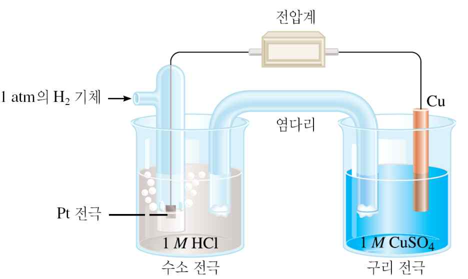

문제 3
단계 1
(1) 식물의 광합성과 호흡을 산화-환원 반응으로 설명하시오.
(2) 황산 구리(\(\text{CuSO}_4\)) 수용액에 아연을 넣을 때, 구리 이온과 아연의 반응식은 아래와 같이 쓸 수 있는데, 해당 산화-환원 반응에서 산화제와 환원제를 결정하시오.
\[\text{Cu}^{2+}\text{(aq)} + \text{Zn(s)} \rightarrow \text{Cu(s)} + \text{Zn}^{2+}\text{(aq)}\]
단계 2
(1) 표준 수소 전극을 설명하고, 산화-환원 반응에서 표준 수소 전극이 필요한 이유를 설명하시오.
(2) 아래 그림과 같이 구리 반쪽 전지를 구성하면 구리 전지의 표준 환원 전위 0.34 V를 얻을 수 있다. 이와 유사하게 납 반쪽 전지를 구성하면 -0.13 V의 표준 환원 전위를 얻게 된다. 황산 구리(\(\text{CuSO}_4\)) 수용액에 납판을 넣는다면 새로운 반응을 기대할 수 있을까? 아니면, 아무 반응도 일어나지 않을까? 답을 말하고, 그 이유를 설명하시오.

단계 3
25 °C 온도 조건에서 100 mL 유리병에 0.10 M HCOOH 수용액을 보관하고 있다. 용액 내에 \(\text{H}_3\text{O}^+\)의 농도가 \(4.2 \times 10^{-3}\) M일 때 폼산의 이온화 상수를 구하시오.